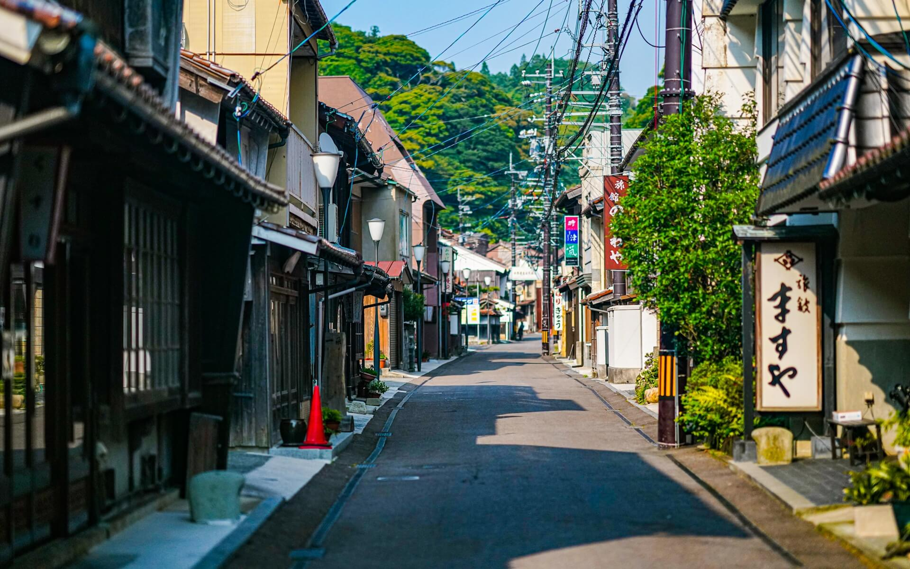
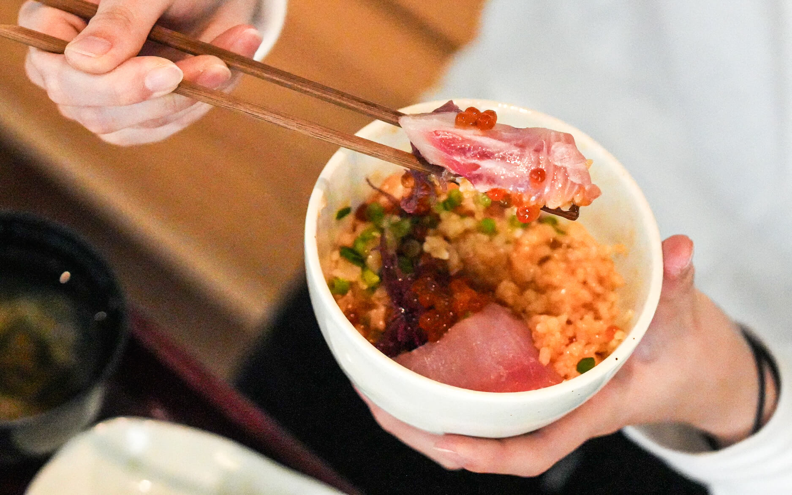
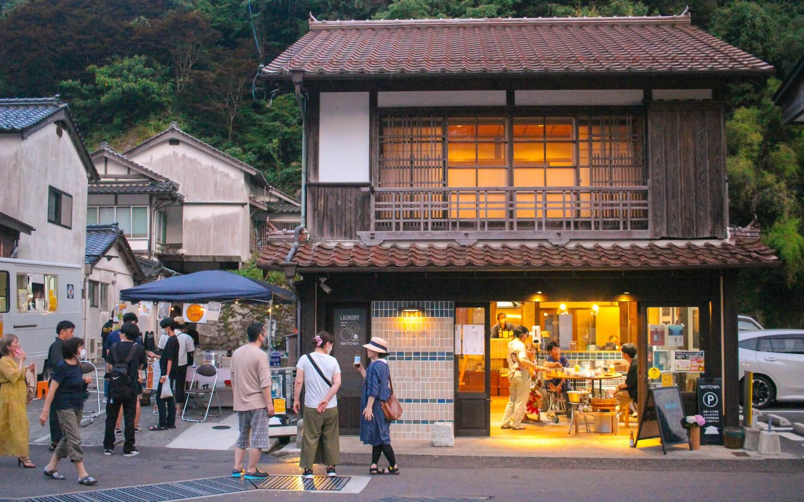
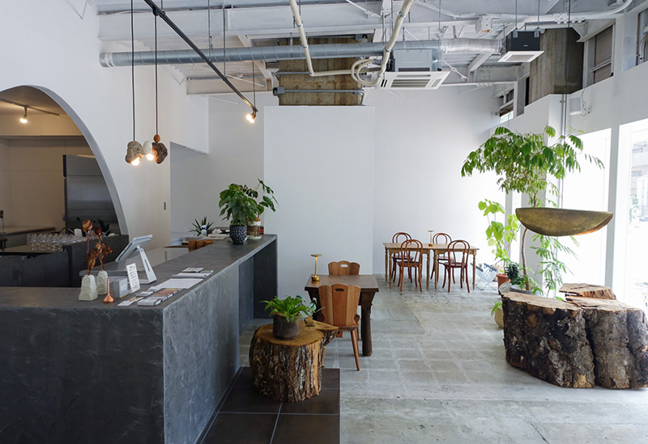
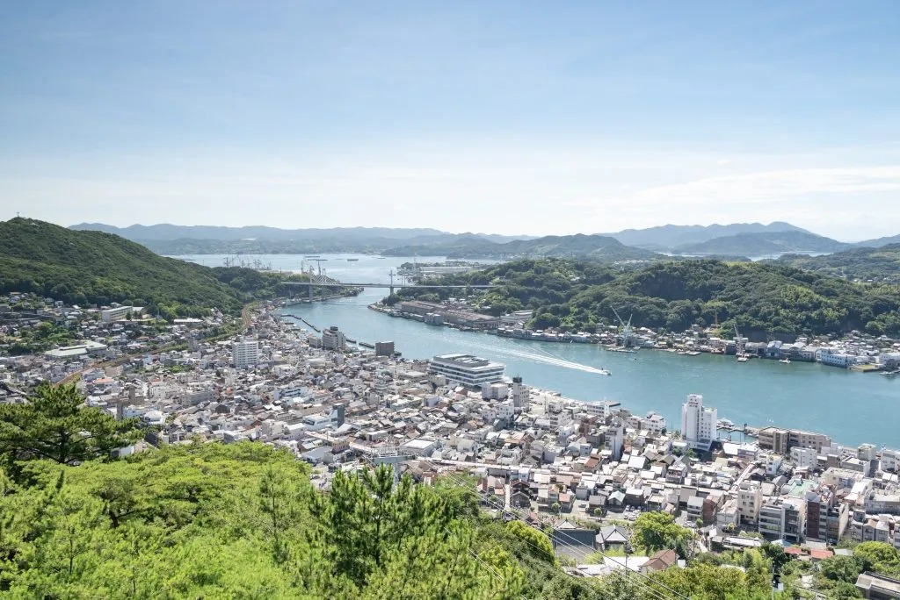
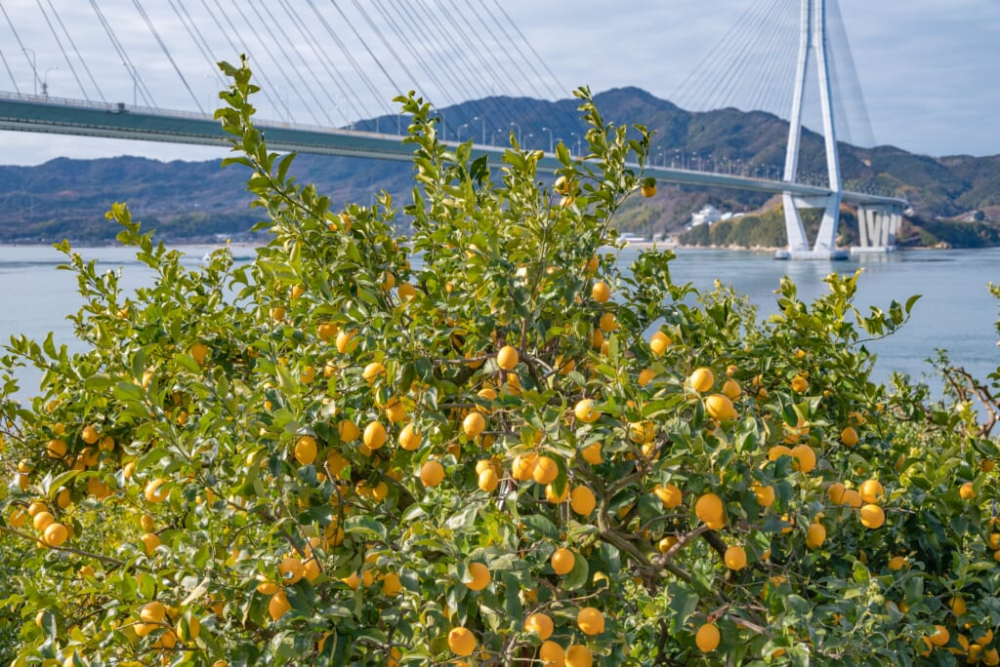
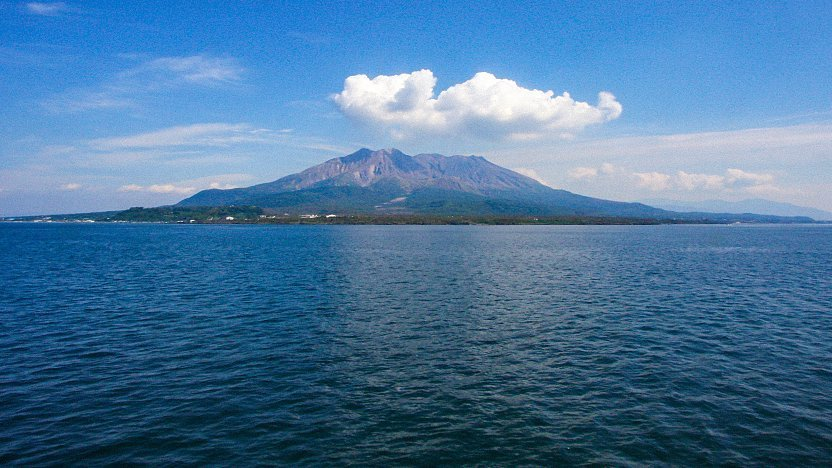
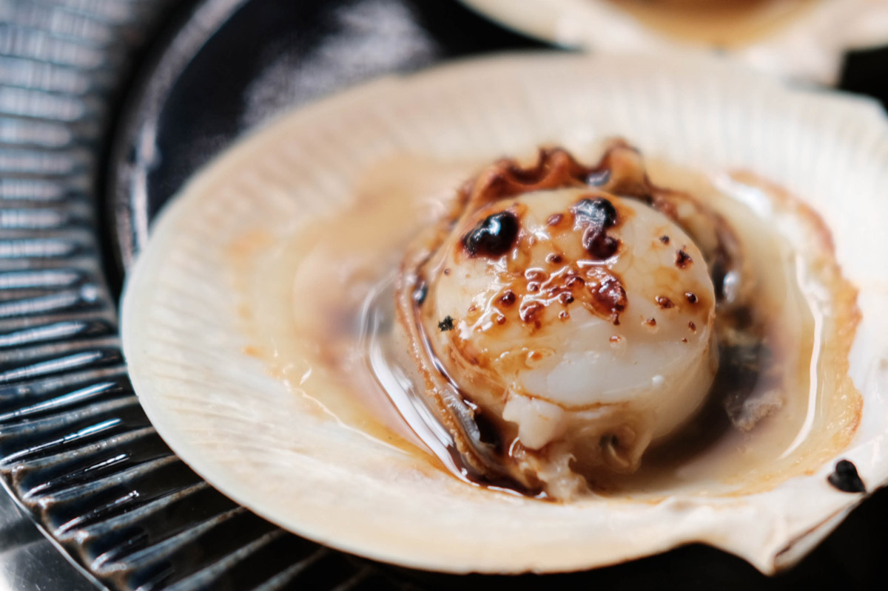
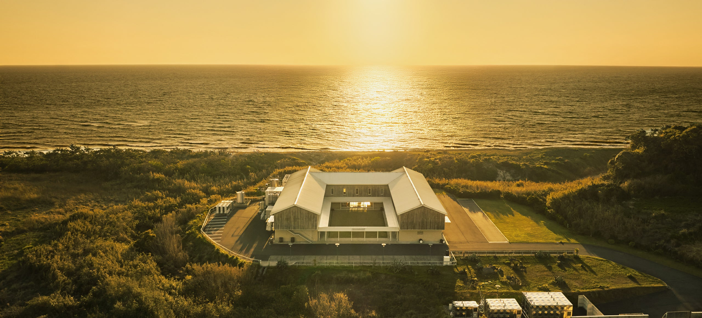

This document is a menu. What you order is entirely up to you.
We've laid out locations across Japan. Each offers a fundamentally different food ecosystem, a different world of ingredients, a different cultural experience. Where you go, and how long you stay, is your call.
Category A lists three places where CIRE provides on-the-ground coordination — introductions to people, access to kitchens and producers, and accompaniment. Category B is a dining experience in Tokyo. Category C covers other notable regions worth knowing about.
All three Category A locations are in western Japan, yet each faces a completely different sea — the deep, cold Sea of Japan; the shallow, calm Seto Inland Sea; and the subtropical East China Sea. Mountain ranges act as climate walls, producing food cultures that share almost nothing in common.
CIRE's recommendation: all three Category A locations, with at least a week in each — that's the minimum to get to know the ingredients, the producers, and to build real relationships with the community.



WATOWA is the strongest candidate site for a summer/autumn residency. Building a relationship with founder Masako Oumi and the community in April will significantly affect what's possible later. Jason being the first non-Japanese chef aligns with Oumi-san's original vision of "bringing chefs from around the world."



Little Setouchi (a licensed shared kitchen) is a realistic venue for a summer pop-up. Local coordinator Tanida-san can connect you with producers and facilities. There's no formal CIR programme in this area yet — starting one here would be genuinely pioneering.



Kodaira Corporation's "Well-being Town" project is transforming the Yunomoto Onsen area, and a chef-in-residence fits naturally within that vision. CIRE's co-founder already has a relationship with Kodaira's CEO, and Kodaira's nationwide corporate network could scale CIR beyond a single programme.
US citizens can enter Japan visa-free for up to 90 days. An April visit works as cultural exchange and research. The assumption is that you won't be doing commercial cooking activities.
A chef skills visa requires 10+ years of culinary experience, a sponsor organisation that operates a foreign-cuisine restaurant, an employment contract, and 2–6 months for processing.
CIRE is currently investigating whether it can serve as a sponsor. Honestly, the bar is high. We'll discuss the details in person.
The April visit stands on its own, independent of any visa questions. Come, see, meet people, build relationships. We'll figure out the summer together after that.